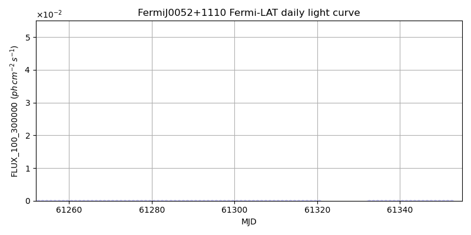
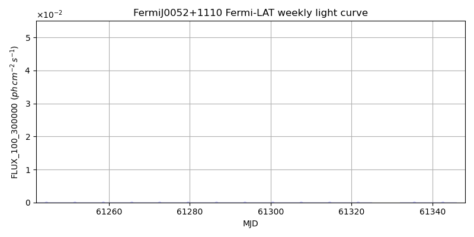
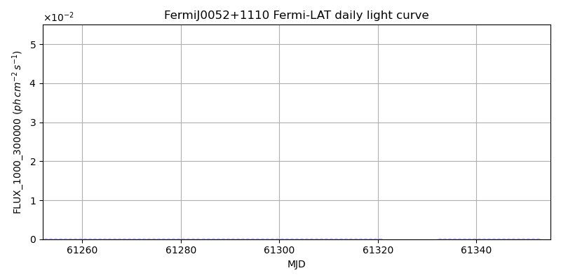
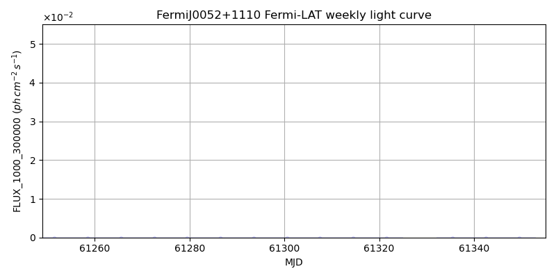

LAT Lightcurve site: https://fermi.gsfc.nasa.gov/ssc/data/access/lat/msl_lc/source/Fermi_J0052p1110
NED: Query
Time of last update of this page: UT: 2026-11-06 16:11 (MJD: 61350.675)
| Property | Value |
|---|---|
| R.A. | 0:52:21.60 |
| Dec. | 11:09:36.0 |
| z | 0.000 |
| 3FGL SpectrumType | |
| 3FGL PL Index | -1.00 |
| 3FGL Flux_100_300000 | -1.00e+00 |
| 3FGL Flux_1000_300000 | -1.00e+00 |
| 3FGL Flux >200 GeV | -1.00e+00 |
| 3FGL Extrap. Crab >200 GeV | -1.00 |
| 3FGL Flux After EBL Absorption >200GeV | -1.00e+00 |
| 3FGL EBL Crab Fraction >200GeV | -1.00 |

| MJD | dMJD | Flux | dFlux | Frac3FGL | FracCrab>200GeV | EBLFracCrab>200GeV |
|---|---|---|---|---|---|---|
| 61345.50 | 0.50 | 9.15e-08 | 0.00e+00 | 0.00 | 0.00 | -0.00 |
| 61346.50 | 0.50 | 8.72e-08 | 0.00e+00 | 0.00 | 0.00 | -0.00 |
| 61347.50 | 0.50 | 8.08e-08 | 0.00e+00 | 0.00 | 0.00 | -0.00 |
| 61348.50 | 0.50 | 1.08e-07 | 0.00e+00 | 0.00 | 0.00 | -0.00 |
| 61349.50 | 0.50 | 8.32e-08 | 0.00e+00 | 0.00 | 0.00 | -0.00 |

| MJD | dMJD | Flux | dFlux | Frac3FGL | FracCrab>200GeV | EBLFracCrab>200GeV |
|---|---|---|---|---|---|---|
| 61307.50 | 3.50 | 3.95e-08 | 0.00e+00 | 0.00 | 0.00 | -0.00 |
| 61314.50 | 3.50 | 1.06e-07 | 0.00e+00 | 0.00 | 0.00 | -0.00 |
| 61321.50 | 3.50 | 1.13e-07 | 0.00e+00 | 0.00 | 0.00 | -0.00 |
| 61335.50 | 3.50 | 8.17e-08 | 0.00e+00 | 0.00 | 0.00 | -0.00 |
| 61342.50 | 3.50 | 6.68e-08 | 0.00e+00 | 0.00 | 0.00 | -0.00 |

| MJD | dMJD | Flux | dFlux | Frac3FGL | FracCrab>200GeV | EBLFracCrab>200GeV |
|---|---|---|---|---|---|---|
| 61345.50 | 0.50 | 2.87e-08 | 0.00e+00 | 0.00 | 0.00 | -0.00 |
| 61346.50 | 0.50 | 1.66e-08 | 0.00e+00 | 0.00 | 0.00 | -0.00 |
| 61347.50 | 0.50 | 1.61e-08 | 0.00e+00 | 0.00 | 0.00 | -0.00 |
| 61348.50 | 0.50 | 1.37e-08 | 0.00e+00 | 0.00 | 0.00 | -0.00 |
| 61349.50 | 0.50 | 1.48e-08 | 0.00e+00 | 0.00 | 0.00 | -0.00 |

| MJD | dMJD | Flux | dFlux | Frac3FGL | FracCrab>200GeV | EBLFracCrab>200GeV |
|---|---|---|---|---|---|---|
| 61307.50 | 3.50 | 2.95e-09 | 0.00e+00 | 0.00 | 0.00 | -0.00 |
| 61314.50 | 3.50 | 3.34e-09 | 0.00e+00 | 0.00 | 0.00 | -0.00 |
| 61321.50 | 3.50 | 3.41e-08 | 0.00e+00 | 0.00 | 0.00 | -0.00 |
| 61335.50 | 3.50 | 2.94e-09 | 0.00e+00 | 0.00 | 0.00 | -0.00 |
| 61342.50 | 3.50 | 2.70e-09 | 0.00e+00 | 0.00 | 0.00 | -0.00 |
--------------------------------------------------------- Using user-supplied coords: 0:52:21.60 11:09:36.0 2000 --------------------------------------------------------- FLWO UT night of: 2026-11-07 Local Sid. @ Midnight: 02:42 Sunset (-15.0) (local, UT): 18:39 01:39 Sunrise (-15.0) (local, UT): 05:36 12:36 Moonrise (local, UT): 05:16 12:16 Moonset (local, UT): Moon phase: 0.04 --------------------------------------------------------- AzTime LSID UT Obj_el Obj_az Mn_el Mn_az Sep. --------------------------------------------------------- 18:39 21:20 01:39 36.9 100.1 -35.5 278.9 178.3 19:09 21:50 02:09 43.2 105.2 -41.6 283.5 178.0 19:39 22:20 02:39 49.3 111.3 -47.5 288.8 177.6 20:09 22:50 03:09 55.1 118.7 -53.3 295.3 177.3 20:39 23:20 03:39 60.4 128.3 -58.7 303.4 177.0 21:09 23:50 04:09 65.0 141.0 -63.5 313.9 176.6 21:39 00:20 04:39 68.3 157.7 -67.5 328.0 176.3 22:09 00:50 05:09 69.6 177.9 -70.0 346.2 175.9 22:39 01:20 05:39 68.7 198.6 -70.5 6.9 175.6 23:09 01:51 06:09 65.7 216.1 -68.8 26.6 175.2 23:39 02:21 06:39 61.4 229.5 -65.4 42.5 174.9 00:09 02:51 07:09 56.1 239.6 -60.9 54.4 174.5 00:39 03:21 07:39 50.4 247.4 -55.8 63.5 174.2 01:09 03:51 08:09 44.4 253.7 -50.2 70.6 173.8 01:39 04:21 08:39 38.2 258.9 -44.4 76.4 173.5 02:09 04:51 09:09 31.9 263.6 -38.4 81.4 173.2 02:39 05:21 09:39 25.5 267.8 -32.4 85.8 172.8 03:09 05:51 10:09 19.1 271.8 -26.3 89.9 172.5 03:39 06:21 10:39 12.7 275.6 -20.2 93.7 172.2 04:09 06:51 11:09 6.4 279.4 -14.2 97.5 171.9 04:39 07:21 11:39 0.5 283.3 -8.1 101.2 171.7 05:09 07:52 12:09 -6.0 287.3 -1.2 105.0 171.4 05:36 08:19 12:36 -11.6 291.2 3.4 108.6 171.2 --------------------------------------------------------- Dark hours >55 deg.: 4.11 srcstart (UT): 2026-11-07 03:08 srcend (UT): 2026-11-07 07:15